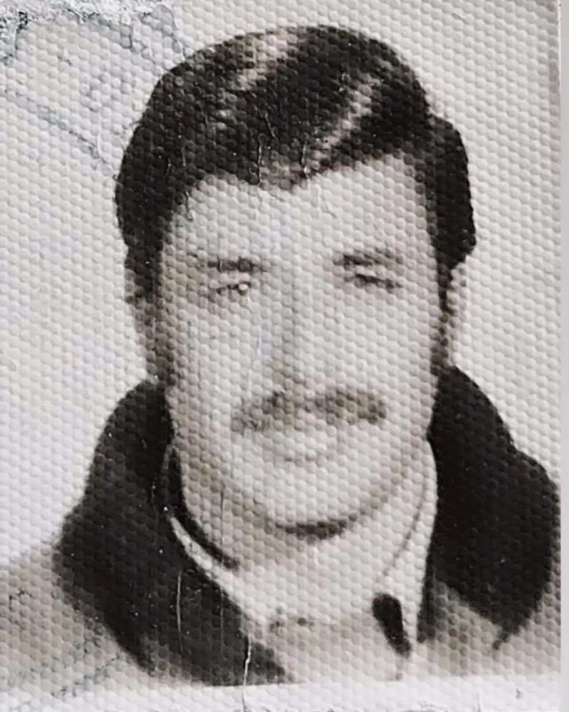
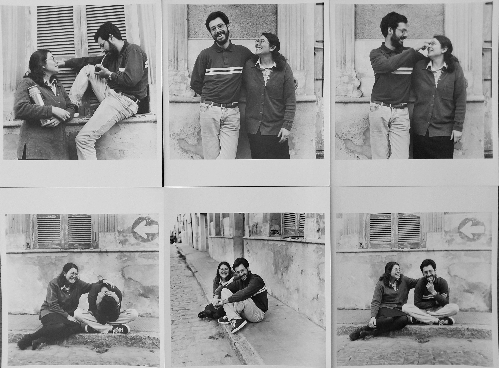

Soy Jorgelina Paula Molina Planas, artista visual y profesora nacional de Bellas Artes desde 1999. Realicé muestras de arte en diferentes espacios y centros culturales de Buenos Aires, Roma y Francia, además de dar clases y talleres en colegios primarios, secundarios, y terciarios. Actualmente llevo adelante mi propio taller de arte “JPMP” desde el 2006, y talleres online desde marzo de 2020, al comenzar la pandemia. En 2022 di talleres online para el Liceo François Truffaut en Francia con la temática “El poder del arte”.
Soy hija de desaparecidos y fui adoptada a los tres años y medio. Mi nombre de origen es Jorgelina, pero al ser adoptada me cambiaron el nombre por Carolina María Sala. Soy nieta restituida n°25, en el año 1984. Luego de pasar mi infancia y adolescencia junto con la familia Sala, empecé a cuestionarme sobre mi verdadera identidad y fue el arte lo que me ayudó a descubrir mi verdadera historia.
A continuación detallo mi camino recorrido y cuáles fueron los acontecimientos que marcaron las distintas etapas de mi vida y de mi obra artística:

Mis padres se conocieron en la Facultad de Arquitectura de Rosario y comenzaron a militar en el PRT/ERP.
El 12 de agosto de 1974, mi papá muere fusilado en Capilla del Rosario, Catamarca, junto a 15
compañeros.
El 15 de mayo de 1977, mi
mamá desaparece en Lanús. Yo tenía tres años y medio y estaba con ella cuando se la llevaron.
Fui adoptada por la familia Sala el 11 de octubre de 1977, quienes me cambiaron el nombre a Carolina
María
Sala. Durante mi vida con la familia adoptiva, estudié en el Colegio Labardén de San Isidro.
En 1984: Nieta restituida N°25. Mi abuela paterna, Ana Taleb de Molina, junto con Abuelas de Plaza de Mayo y otros organismos de DDHH, me buscó por todo el mundo, enviando mi foto a diferentes medios y organismos de Derechos Humanos para que me encuentren. A partir de entonces, mi abuela paterna, Ana Taleb de Molina, escribió cartas que me enviaba desde Suecia, donde estuvo exiliada con otro de sus hijos, Fernando Molina. Ella guardaba copias originales de todas las cartas que enviaba para mis cumpleaños, hasta que murió. Ninguna de esas cartas me fueron entregadas por mi familia adoptiva, hasta que un primo Molina, viajó a Suecia en el 2011 y me trajo dos valijas llenas de cartas originales de mi abuela paterna, en las que encontré fotos y descripciones de mis padres y recuerdos que ella tenía de cuando yo era bebita. Cartas que escribió para mis cumpleaños y que yo no había recibido anteriormente (estas cartas son parte de la Muestra G.I.R. junto con archivos y fotografías que recopilé más adelante).
En mayo de 1996 me reencontré con mi hermano Damián y con la familia biológica: tíos, primos y mi abuela materna, Eva Segovia de Planas, que falleció luego de vernos.
Continué mis estudios de Bellas Artes y me convertí en monja por seis años en la Congregación de Esclavas del Sagrado Corazón de Jesús. Desde allí, hice un largo camino de búsqueda de mi familia y lugares que habían sido importantes para lograr conocer el recorrido que hicieron mis padres. En 1999 me recibí de Profesora Nacional de Bellas Artes siendo monja.
En 2010 decidí volver a mi nombre de origen: Jorgelina Paula Molina Planas. Realicé todos los trámites necesarios para recuperar el nombre que me pusieron mis padres biológicos al nacer, con mi DNI original y la nulidad de adopción. Tras años de trámites judiciales en el Juzgado de San Isidro, logré tener el DNI como Jorgelina Paula Planas, que era el que tenía de bebé. Mi padre no había podido ponerme su apellido ya que estaba clandestino, y luego lo fusilaron. Después de obtener mi DNI original tuve que comenzar los trámites para cambiar toda mi documentación y la de mis hijos (certificados de nacimiento, títulos, trabajos, registro de conducir, tarjetas, servicios, etc.).
Actualmente doy clases de Arte presencial y online, en mi taller JPMP.
Mis obras han pasado de la figuración a la abstracción, en las que priman los
colores saturados y vibrantes, expresando vida, autenticidad, alegría y libertad.
Otra de mis series actuales de obras son abstractas, en blanco y negro,
sintéticas, de líneas simples y arquitectónicas, son como planos vistos desde
arriba, en donde hay un entrecruzamiento o superposición de líneas y formas
que se entrelazan, abriéndose al espacio e intercambiando movimientos,
silencios, quietud o vibraciones, simbolizando la vida en constante cambio.
Pueden ver mis obras y la de mis alumnos en Instagram, notas periodísticas en Google, vídeos en Youtube, Linkedin y Facebook haciendo click aquí: